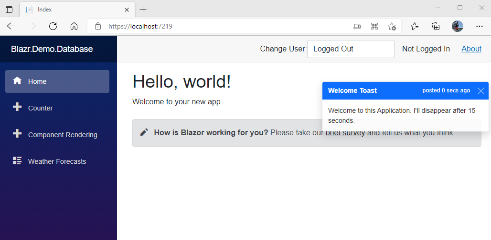

This article shows how to build a simple Bootstrap Toaster in Blazor.
It demonstrates several programming principles and coding patterns that are applicable in almost all Blazor applications.
Separation of Concerns - Data doesn't belong in the UI. The Toaster UI component contains no data or data management. It job is to display toasts.
The Blazor Show/Hide Pattern - I was reluctant to call this a pattern, but the number of times I've see programmers trying to achieve this with JSInterop changed my mind. This pattern implements CSS framework .Show() and .Hide() Javascript functionality in C# in the component.
The Blazor Notification Pattern - decouples UI components from the underlying data that drive their behaviour using events.
Value Objects - Modern design emphasises the use of value objects wherever appropriate.
You can find the code in my Blazr.Demo.Toaster Repo.
A demo site can be found here at https://blazr-demo-database-server.azurewebsites.net

First an enum for the message colour. It uses Bootstrap nomenclature directly to make building Css strings simple.
public enum MessageColour { Primary, Secondary, Dark, Light, Success, Danger, Warning, Info }
Toast is declared as a value object. Once we've created an instance, we have no reason to change it.
record.{ get; init; }.TimeToBurn uses DateTimeOffset to give time zone independent absolute time.public record Toast { public Guid Id = Guid.NewGuid(); public string Title { get; init; } = string.Empty; public string Message { get; init; } = string.Empty; public MessageColour MessageColour { get; init; } = MessageColour.Primary; public DateTimeOffset TimeToBurn { get; init; } = DateTimeOffset.Now.AddSeconds(30);
Next:
Posted is a object creation timestamp.IsBurnt is a bool to check toast expiration.elapsedTime is used to build ElapsedTimeText.ElapsedTimeText is used by the UI Component.public readonly DateTimeOffset Posted = DateTimeOffset.Now; public bool IsBurnt => TimeToBurn < DateTimeOffset.Now; private TimeSpan elapsedTime => Posted - DateTimeOffset.Now; public string ElapsedTimeText => elapsedTime.Seconds > 60 ? $"posted {-elapsedTime.Minutes} mins ago" : $"posted {-elapsedTime.Seconds} secs ago";
Finally a static constructor helper method.
public static Toast NewToast(string title, string message, MessageColour messageColour, int secsToLive) => new Toast { Title = title, Message = message, MessageColour = messageColour, TimeToBurn = DateTimeOffset.Now.AddSeconds(secsToLive) };
ToasterService is a Dependancy Injection service that holds and manages Toasts. It has a private list to hold the toasts with add and clear methods. There's a timer to trigger ClearBurntToast to clear out expired toasts and if necessary raise the ToasterChanged event. It also raises the ToasterTimerElapsed event on each timer cycle.
IDisposable as it registers an event handler with the timer that needs disposing correctly.Toast instances. The list is managed internally.public class ToasterService : IDisposable { private readonly List<Toast> _toastList = new List<Toast>(); private System.Timers.Timer _timer = new System.Timers.Timer();
There are two public events that other services or UI components can subscribe to.
ToasterChanged is raised whenever the toast list is changed.ToasterTimerElapsed is raised on each timer loop.HasToasts is a simple status bool.
public event EventHandler? ToasterChanged;
public event EventHandler? ToasterTimerElapsed;
public bool HasToasts => _toastList.Count > 0;
ClearBurntToast is our toast list management method. It checks to see it there's any burnt toast. It there is it clears them out and raises the ToasterChanged event.
private bool ClearBurntToast()
{
var toastsToDelete = _toastList.Where(item => item.IsBurnt).ToList();
if (toastsToDelete is not null && toastsToDelete.Count > 0)
{
toastsToDelete.ForEach(toast => _toastList.Remove(toast));
this.ToasterChanged?.Invoke(this, EventArgs.Empty);
return true;
}
return false;
}
TimerElapsed is our event handler for the timer elapsed event. It clears any burnt toast and raises the ToasterTimerElapsed event.
private void TimerElapsed(object? sender, ElapsedEventArgs e)
{
this.ClearBurntToast();
this.ToasterTimerElapsed?.Invoke(this, EventArgs.Empty);
}
The constructor adds a welcome Toast, sets up the timer and registers the event handler.
public ToasterService()
{
AddToast(new Toast { Title = "Welcome Toast", Message = "Welcome to this Application. I'll disappear after 15 seconds.", TTD = DateTimeOffset.Now.AddSeconds(10) });
_timer.Interval = 5000;
_timer.AutoReset = true;
_timer.Elapsed += this.TimerElapsed;
_timer.Start();
}
The CRUD type operations are self explanatory. Each calls ClearBurntToast to run the management method.
public List<Toast> GetToasts()
{
ClearBurntToast();
return _toastList;
}
public void AddToast(Toast toast)
{
_toastList.Add(toast);
// only raise the ToasterChanged event if it hasn't already been raised by ClearBurntToast
if (!this.ClearBurntToast())
this.ToasterChanged?.Invoke(this, EventArgs.Empty);
}
public void ClearToast(Toast toast)
{
if (_toastList.Contains(toast))
{
_toastList.Remove(toast);
// only raise the ToasterChanged event if it hasn't already been raised by ClearBurntToast
if (!this.ClearBurntToast())
this.ToasterChanged?.Invoke(this, EventArgs.Empty);
}
}
Finally the Dispose method clears the timer event handler.
public void Dispose()
{
if (_timer is not null)
{
_timer.Elapsed += this.TimerElapsed;
_timer.Stop();
}
}
}
ToasterService can run as either a Scoped or Singleton service, depending on what you're want it to do.
Toaster is the UI component.
The razor markup implements the Bootstrap Toast markup, with a foreach loop to add each toast. The markup will display the toasts stacked in the top right.
this.toasterService.HasToasts. If not then no content is rendered - the Blazor Show/Hide Pattern.@_toastCss gets the correct Css string for the message colour.this.ClearToast(toast) to remove a toast.@implements IDisposable @if (this.toasterService.HasToasts) { <div class=""> <div class="toast-container position-absolute top-0 end-0 mt-5 pt-5 pe-2"> @foreach (var toast in this.toasterService.GetToasts()) { var _toastCss = toastCss(toast); <div class="toast show" role="alert" aria-live="assertive" aria-atomic="true"> <div class="toast-header @_toastCss"> <strong class="me-auto">@toast.Title</strong> <small class="@_toastCss">@toast.ElapsedTimeText</small> <button type="button" class="btn-close btn-close-white" aria-label="Close" @onclick="() => this.ClearToast(toast)"></button> </div> <div class="toast-body"> @toast.Message </div> </div> } </div> </div> }
The code behind class:
ComponentBase and implements IDisposable to unhook event handlers.ToasterService.ToasterService. We're in the nullable world, but the C# compiler doesn't know ToasterService can't be null, so we create a second null forgiving reference so we don't need to null forgive ever time we use the ToasterService instance.public partial class Toaster : ComponentBase, IDisposable { [Inject] private ToasterService? _toasterService { get; set; } private ToasterService toasterService => _toasterService!;
ToastChanged is the event handler for the ToasterService events. It invokes StateHasChanged on the UI thread.
private void ToastChanged(object? sender, EventArgs e)
=> this.InvokeAsync(this.StateHasChanged);
OnInitialized registers the two ToasterService events to ToastChanged, and Dispose removes them.
protected override void OnInitialized()
{
this.toasterService.ToasterChanged += ToastChanged;
this.toasterService.ToasterTimerElapsed += ToastChanged;
}
public void Dispose()
{
this.toasterService.ToasterChanged -= ToastChanged;
this.toasterService.ToasterTimerElapsed -= ToastChanged;
}
Finally ClearToast clears the selected toast from the service and toastCss gets the toast background colour.
private void ClearToast(Toast toast)
=> toasterService.ClearToast(toast);
private string toastCss(Toast toast)
{
var colour = Enum.GetName(typeof(MessageColour), toast.MessageColour)?.ToLower();
return toast.MessageColour switch
{
MessageColour.Light => "bg-light",
_ => $"bg-{colour} text-white"
};
}
}
Add ToasterService to the DI service container in Program.
Add the component to either Layout or App or wherever you wish to use it.
<CascadingAuthenticationState> <Router AppAssembly="@typeof(App).Assembly" PreferExactMatches="@true"> .... </Router> </CascadingAuthenticationState> <Toaster />
AddToast. The example below shows a demo Index page.@page "/" <PageTitle>Index</PageTitle> <h1>Hello, world!</h1> Welcome to your new app. <SurveyPrompt Title="How is Blazor working for you?" /> <div class="m-2 p-2"> <button class="btn btn-primary" @onclick="AddToast" >Add a Toast</button> </div> @code { [Inject] private ToasterService? _toasterService {get; set;} private ToasterService toasterService => _toasterService!; private void AddToast() => toasterService.AddToast(Toast.NewToast("Hello World", "Hello from Blazor", MessageColour.Info, 30)); }
The design demonstrates a clean separation of data from UI. All data handling happens in ToasterService. Toaster uses references to the data objects in ToasterService.
The Blazor notification pattern is used to update the UI whenever the toast list changes. Toaster registers an event handler with the two ToasterService events which re-renders the component whenever an event occurs.
Toaster demonstrates how to show and hide UI markup based on state.
Toast is a value object. It simplifies equality checking (we don't do any here) and ensures toasts can't be modified once created.